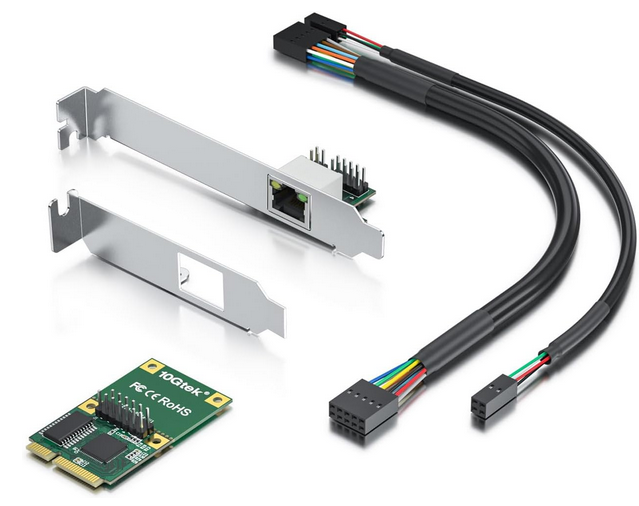
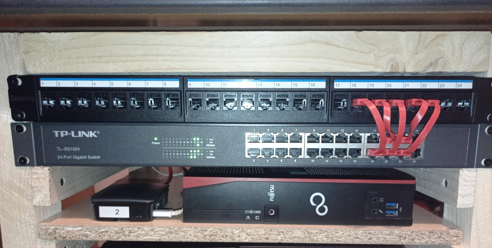

BytesOfProgress
DIY Router Building: Make your internet connection truly yours
Hardware
19th December 2022 / 08:30 PM
I built a router out of a Fujitsu Thinclient ( Futro S720 ). The first step was getting an ethernet expansion card ( miniPCIe ) to have an additional ethernet port. I decided to use this one:
Software
After installing it into the case and testing if it all works, I installed the operating system on the router. I decided to use PFsense, which is based on FreeBSD.
WiFi Access
To access the router's network without ethernet, I still needed a way to connect to it via WiFi.
To accomplish this, I used a Raspberry Pi 3 running OpenWRT as my WiFi access point. The process was fairly easy, just install OpenWRT on the Raspberry Pi, connect it to my Computer, make some basic configurations and then plug it into my network.
Reorganizing
I also used this opportunity to reorganize the cabeling of my entire network. This is what it looks like now:
back